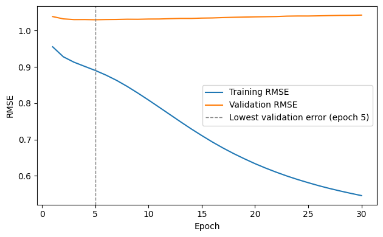

The Activity
Unit 8 · Run 3 November 2026 · Tutor: Dr Elizabeth Oladapo · Evidences learning outcomes 3 and 4
Activity guidance: read Yu et al. (2024), who compare a convolutional neural network with conventional models, and weigh the trade-offs for one domain relevant to the team project’s track (Task 1); reflect as a stakeholder on what is lost when a model cannot explain its decisions, and on SHAP, LIME or visual explanations (Task 2); run the supplied recommender notebook on MovieLens 100K (Harper and Konstan, 2015) and use SHAP on a film known to be good and a film predicted low (Task 3). For Task 1 I compare the paper with my team’s Track 2 project, which estimates reviews per month as a stand-in for demand. Task 2 explains the model built in Task 3, so I take Task 3 first.
Findings
| Step | What I did | Result |
|---|---|---|
| Supplied exercise (100,000 ratings) | Corrected the ranking score, then ran the notebook as supplied | The top-10 ranking score (NDCG at 10) had compared each list with an ideal built only from its own hits. Corrected to use all of a user’s relevant films (Järvelin and Kekäläinen, 2002), it fell from 0.304 to 0.149. Test RMSE was 1.040. |
| Who the test set contains | Counted test users with no training ratings | 97 of 166 test users, giving 8,582 of the 10,000 test ratings. The model’s advantage over a bias-only baseline was larger on users it knew (RMSE 1.023 against 1.119) than overall (1.040 against 1.045); on new users it did worse (1.043 against 1.032). |
| Overfitting | Read the training history, then retrained with early stopping | Validation error was lowest at epoch 5 (1.0301) and 1.0429 by epoch 30, yet the bias baseline still had the lower validation error (1.0191). |
| Ranking | Compared the top-10 lists with the most-rated films each user had not rated | The most-rated list scored 0.209 against 0.149, but covered 4.5% of films against 14.6%. The supplied cold-user slice held 1 test user. |
| Task 3: SHAP | Explained Blade Runner (1982) and the lowest prediction for user 13, through a ridge regression surrogate of the model (Géron, 2025) | Blade Runner: 3.80 (user 13 rated it 4), mostly from the film’s bias (+0.424); the 32 hidden terms netted +0.033. Bio-Dome (1996): 0.30, below the 1 to 5 scale. The surrogate matches the model closely on the rows it was fitted to (RMSE 0.0027). |
| Task 1: Yu et al. (2024) | Checked how the paper compares the CNN with four conventional models | The test table favours the CNN over a decision tree (RMSE 0.518 against 1.372), but the abstract quotes the CNN’s training figures (0.528, R² 0.953) as test results. Computational efficiency is claimed without reported timings. |
| Task 2: explaining to a stakeholder | Read the supplied SHAP example against the user’s training history | User 90 has no training ratings, yet SHAP credited the user bias with +0.159, because it measures against the average, and the average user bias is negative. |

The figures were sounder than the claims built on them. Most test users were new, so the test mostly measured cold start, and validation error rose after epoch 5, overfitting (Géron, 2025). A laboratory model trained on existing trial sites knows nothing about a new site, so one overall score cannot show how it will perform there; I would test it on sites it has not seen. SHAP split a surrogate’s near-copy of each score into contributions (Molnar, 2025): correct arithmetic saying nothing about taste, and LIME or a chart would show the same unnamed terms. My team estimates, not forecasts, reviews per month; I would tell executives the target is review activity, not bookings.
Evidence
I ran the notebook in Google Colab. Its first code cell records the run, and all 18 code cells completed without errors:
Run by Anne Dayer (student 39359) in Google Colab on 03 November 2026 at 14:47 UTCAI Acknowledgement
Codex was used to assist in identifying appropriate code solutions and to proofread and refine the code I produced. Claude and Grammarly supported proofreading, language refinement, and formatting of my written text. All final decisions, analyses, interpretations, conclusions, and recommendations are my own.
References
Géron, A. (2025) Hands-On Machine Learning with Scikit-Learn and PyTorch. Santa Rosa: O’Reilly.
Harper, F.M. and Konstan, J.A. (2015) ‘The MovieLens datasets: history and context’, ACM Transactions on Interactive Intelligent Systems, 5(4), article 19. Available at: https://doi.org/10.1145/2827872
Järvelin, K. and Kekäläinen, J. (2002) ‘Cumulated gain-based evaluation of IR techniques’, ACM Transactions on Information Systems, 20(4), pp. 422–446. Available at: https://doi.org/10.1145/582415.582418
Molnar, C. (2025) Interpretable Machine Learning: A Guide for Making Black Box Models Explainable. 3rd edn. Available at: https://christophm.github.io/interpretable-ml-book/ (Accessed: 3 November 2026).
Yu, X., Tang, L., Long, L. and Sina, M. (2024) ‘Comparison of deep and conventional machine learning models for prediction of one supply chain management distribution cost’, Scientific Reports, 14, article 24195. Available at: https://doi.org/10.1038/s41598-024-75114-9